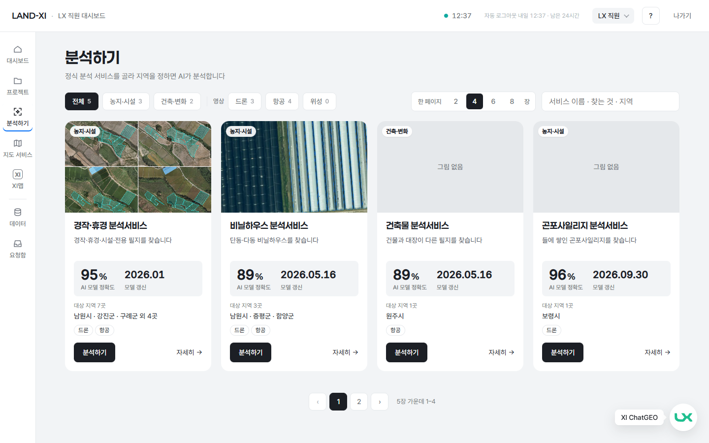
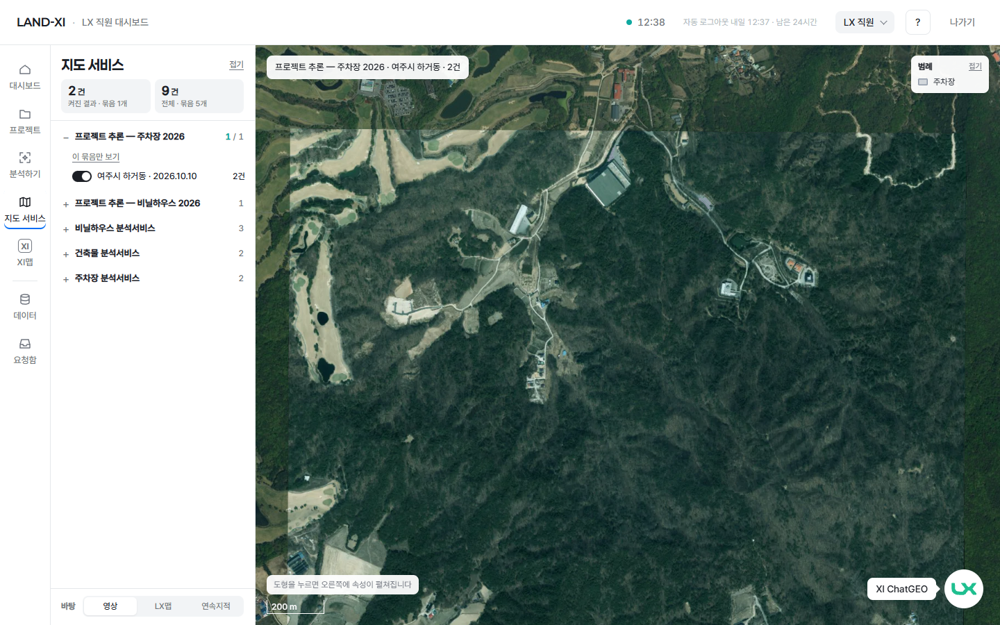
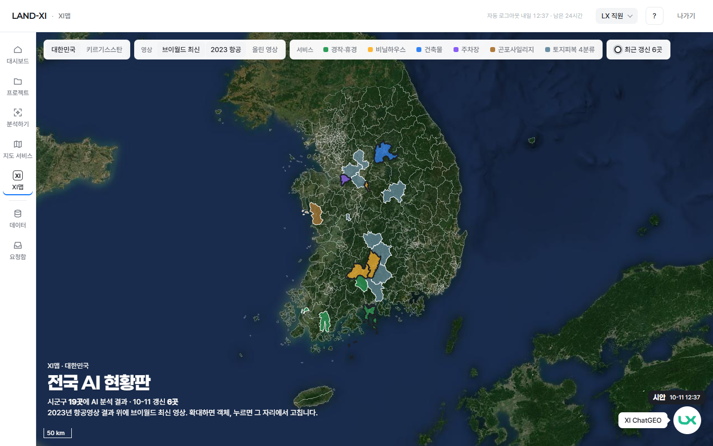

분석하기
정식 분석서비스를 골라 내 영상 하나를 분석에 맡깁니다.
같은 LX 직원 메뉴에서 나란히 열리는 세 화면. 모두 10-11 바깥 주소에서 로그인 폼으로 찍은 실제 화면(XI맵은 시안 화면).

정식 분석서비스를 골라 내 영상 하나를 분석에 맡깁니다.

내가 돌린 결과를 레이어로 켜서 보고 내려받습니다.

전국 AI 현황판 — 최신 영상 위 전국 결과를 보고, 틀린 것은 그 자리에서 고칩니다.
분석하기에서 만든 결과 → 지도 서비스에서 보고 내려받기 → 전국에 쌓인 결과는 XI맵에서 한눈에 · 그 자리에서 고치기 → 다음 분석이 나아짐